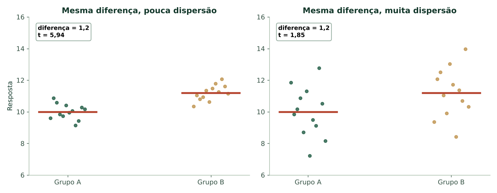
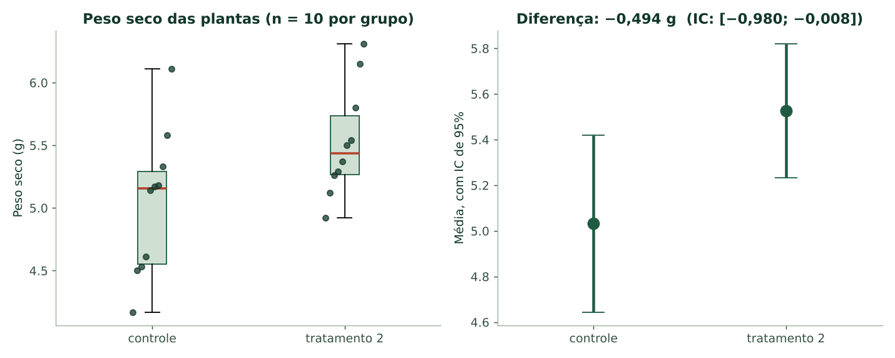

Teste t de Student (dois grupos)
Compara as médias de dois grupos independentes supondo que tenham a mesma variância.
Comece por aqui
Dois grupos, uma pergunta: as médias diferem? O adubo aumentou o rendimento? A nova liga é mais resistente? O teste t de Student compara as médias de dois grupos independentes, ou seja, formados por unidades distintas. É um dos procedimentos mais usados da estatística, e também um dos mais aplicados fora de lugar.
A versão clássica supõe que os dois grupos têm a mesma variância e combina as duas estimativas. O teste de Welch dispensa essa suposição e é o padrão do R. Quando as variâncias são de fato iguais, Welch perde muito pouco; quando não são, Student pode errar bastante. Por isso muitos autores recomendam Welch por padrão.
O que é o teste
A diferença entre duas médias amostrais varia de amostra para amostra. O teste compara a diferença observada com o quanto ela variaria por acaso, medido pelo erro-padrão da diferença. Quando os dois grupos têm a mesma variância, as duas estimativas de variância são combinadas em uma só, o que aproveita toda a informação disponível.

Pressupostos e como verificá-los
| Pressuposto | Por que importa | Como verificar |
|---|---|---|
| Grupos independentes entre si e dentro de si | É o pressuposto mais grave. | Delineamento; medidas nas mesmas unidades pedem o teste t pareado. |
| Normalidade em cada grupo (ou n grande) | Define a distribuição de referência. | Shapiro–Wilk e Q–Q por grupo; com n acima de 30 por grupo, o teste é robusto. |
| Variâncias iguais | É o que justifica combinar as variâncias. | Levene–Brown–Forsythe; razão entre os desvios-padrão. Se falhar, use Welch. |
| Variável quantitativa | O teste compara médias. | Natureza da variável. |
| Grupos de tamanhos semelhantes | Com variâncias desiguais e grupos desbalanceados, o erro do teste de Student aumenta muito. | table(grupo). |
| Ausência de valores extremos influentes | Médias e variâncias são sensíveis. | Boxplot; considere o teste de Yuen. |
Hipóteses e estatística de teste
Em que:
- \(\bar x_1,\ \bar x_2\)
- médias amostrais dos dois grupos
- \(s_1^2,\ s_2^2\)
- variâncias amostrais
- \(n_1,\ n_2\)
- tamanhos dos grupos
- \(s_p^2\)
- variância combinada (pooled): média das variâncias, ponderada pelos graus de liberdade
- \(d\)
- d de Cohen: diferença padronizada
Exemplo numérico, passo a passo
Dados do exemplo: controle com \(n_1=10\), \(\bar x_1=5{,}032\) e \(s_1=0{,}5831\); tratamento 2 com \(n_2=10\), \(\bar x_2=5{,}526\) e \(s_2=0{,}4426\).
| Passo | Cálculo | Resultado |
|---|---|---|
| Variância combinada | [9 × 0,3400 + 9 × 0,1959] / 18 | 0,2679 |
| Erro-padrão da diferença | √(0,2679 × (1/10 + 1/10)) | 0,2315 |
| Diferença das médias | 5,032 − 5,526 | −0,494 g |
| Estatística de teste | −0,494 / 0,2315 | t = −2,1340 |
| Graus de liberdade | 10 + 10 − 2 | 18 |
| Valor-p | 2 × P(t₍₁₈₎ ≤ −2,1340) | 0,0469 |
| Intervalo de confiança | −0,494 ± 2,101 × 0,2315 | [−0,980; −0,008] |
| Tamanho do efeito | −0,494 / √0,2679 | d = −0,954 |
O valor-p de 0,0469 fica logo abaixo de 0,05 e o intervalo de confiança quase toca o zero: o limite superior é \(-0{,}008\) g.
Esse é um resultado limítrofe. Declarar “há diferença significativa” sem mencionar que o intervalo vai de 0,98 g a praticamente zero seria enganoso. A estimativa pontual indica um aumento médio de 0,49 g com o tratamento, mas a amostra de 10 plantas por grupo não permite estimar esse ganho com precisão.
Propriedades
- Com \(n_1=n_2\), o teste de Student e o de Welch dão a mesma estatística \(t\); só os graus de liberdade mudam.
- A variância combinada só faz sentido se as variâncias populacionais forem iguais; caso contrário ela mistura quantidades diferentes.
- O teste equivale a uma ANOVA de um fator com dois grupos, e \(F=t^2\).
- Equivale também à correlação ponto-bisserial entre a variável e o indicador de grupo.
- É invariante a mudanças de unidade: multiplicar todos os valores por uma constante não altera \(t\).
- Com variâncias desiguais e grupos desbalanceados, a taxa real de erro tipo I pode se afastar muito de 5%.
Como interpretar os resultados
| Elemento | O que informa | Cuidado |
|---|---|---|
| Diferença das médias | A resposta na unidade original. | É o número que interessa relatar. |
| Intervalo de confiança | Magnitude plausível da diferença. | Mais informativo que o valor-p. |
| Valor-p | Evidência contra a igualdade das médias. | Um p de 0,049 e outro de 0,051 dizem praticamente o mesmo. |
| d de Cohen | Diferença em desvios-padrão. | 0,2 pequeno; 0,5 médio; 0,8 grande. |
| Poder | Capacidade de detectar o efeito. | Com n pequeno, não rejeitar é pouco informativo. |
Reporte: médias e desvios-padrão de cada grupo, n, a diferença com intervalo de confiança, t, graus de liberdade, valor-p e tamanho do efeito.
Como executar no R e em Python
Onde executar o código em Python
Não é preciso instalar nada: o Google Colab é um computador na nuvem, gratuito, que executa Python pelo navegador e já traz as bibliotecas usadas aqui (numpy, scipy e matplotlib).
t.test() pertence ao pacote stats, já instalado com o R. Atenção: o padrão do R é o teste de Welch; para a versão clássica de Student é preciso escrever var.equal = TRUE. A fórmula y ~ grupo exige um fator com exatamente dois níveis.
t.test(weight ~ group, data = dados, var.equal = TRUE) # Student
t.test(weight ~ group, data = dados) # Welch (padrão do R)
Exemplo de aplicação
Contexto dos dados
O conjunto PlantGrowth traz o peso seco de 30 plantas sob três condições: um grupo controle e dois tratamentos. Comparamos aqui o controle com o tratamento 2, com dez plantas em cada grupo, para avaliar se o tratamento alterou o peso seco médio.
Código em R
# Teste t de Student para dois grupos independentes: exemplo completo ----
# Pacote: apenas o stats (já vem com o R). Dados: PlantGrowth.
# 1. Dados: peso seco de plantas (g) no grupo controle e no tratamento 2
dados <- subset(PlantGrowth, group %in% c("ctrl", "trt2"))
dados$group <- droplevels(dados$group)
aggregate(weight ~ group, data = dados, FUN = function(v) c(n = length(v), media = mean(v), dp = sd(v)))
# 2. Diagnóstico gráfico
boxplot(weight ~ group, data = dados, col = "gray85", ylab = "Peso seco (g)")
# 3. Pressupostos: normalidade em cada grupo e igualdade de variâncias
tapply(dados$weight, dados$group, function(v) shapiro.test(v)$p.value)
# install.packages("car")
# car::leveneTest(weight ~ group, data = dados)
var.test(weight ~ group, data = dados) # razão de variâncias (exige normalidade)
# 4. Teste t de Student (supõe variâncias iguais)
t.test(weight ~ group, data = dados, var.equal = TRUE)
# 5. Cálculo manual da variância combinada
g <- split(dados$weight, dados$group)
n1 <- length(g$ctrl); n2 <- length(g$trt2)
s2p <- ((n1 - 1) * var(g$ctrl) + (n2 - 1) * var(g$trt2)) / (n1 + n2 - 2)
ep <- sqrt(s2p * (1/n1 + 1/n2))
c(s2_combinada = s2p, erro_padrao = ep,
t = (mean(g$ctrl) - mean(g$trt2)) / ep, gl = n1 + n2 - 2)
# 6. Teste t de Welch (não supõe variâncias iguais) — é o padrão do R
t.test(weight ~ group, data = dados)
# 7. Tamanho do efeito
d <- (mean(g$ctrl) - mean(g$trt2)) / sqrt(s2p)
c(d_de_Cohen = d, g_de_Hedges = d * (1 - 3 / (4 * (n1 + n2) - 9)))
# 8. Alternativa não paramétrica
wilcox.test(weight ~ group, data = dados)
# 9. Gráfico das médias com intervalos de confiança
medias <- tapply(dados$weight, dados$group, mean)
erros <- tapply(dados$weight, dados$group, function(v) qt(0.975, length(v) - 1) * sd(v) / sqrt(length(v)))
bp <- barplot(medias, ylim = c(0, 7), ylab = "Peso seco médio (g)", col = "gray85")
arrows(bp, medias - erros, bp, medias + erros, angle = 90, code = 3, length = 0.1)
A mesma análise em Python, com os resultados
Cole o código em um notebook do Google Colab ↗ e execute com Shift+Enter. Os valores abaixo são a saída desse código.
# Bibliotecas: numpy, scipy e matplotlib (já instaladas no Google Colab)
import numpy as np
from scipy import stats
import matplotlib.pyplot as plt
# Dados: conjunto PlantGrowth (peso seco de plantas, em g, sob três condições)
controle = np.array([4.17, 5.58, 5.18, 6.11, 4.50, 4.61, 5.17, 4.53, 5.33, 5.14])
trat2 = np.array([6.31, 5.12, 5.54, 5.50, 5.37, 5.29, 4.92, 6.15, 5.80, 5.26])
n1, n2 = len(controle), len(trat2)
m1, m2 = controle.mean(), trat2.mean()
s1, s2 = controle.std(ddof=1), trat2.std(ddof=1)
print(f"controle: n = {n1} | média = {m1:.4f} | DP = {s1:.4f} | variância = {s1**2:.4f}")
print(f"trat2: n = {n2} | média = {m2:.4f} | DP = {s2:.4f} | variância = {s2**2:.4f}")
print(f"Diferença das médias (controle - trat2) = {m1 - m2:.4f} g")
# 1. Variância combinada e estatística de teste de Student
sp2 = ((n1 - 1) * s1**2 + (n2 - 1) * s2**2) / (n1 + n2 - 2)
ep = np.sqrt(sp2 * (1 / n1 + 1 / n2))
t = (m1 - m2) / ep; gl = n1 + n2 - 2
print(f"\nVariância combinada = [{n1-1} x {s1**2:.4f} + {n2-1} x {s2**2:.4f}] / {n1+n2-2} = {sp2:.4f}")
print(f"Erro-padrão da diferença = raiz({sp2:.4f} x (1/{n1} + 1/{n2})) = {ep:.4f}")
print(f"t = {m1 - m2:.4f} / {ep:.4f} = {t:.4f} com {gl} gl | p-valor = {2*stats.t.sf(abs(t), gl):.5f}")
print("scipy (Student):", stats.ttest_ind(controle, trat2, equal_var=True))
# 2. Intervalo de confiança de 95% para a diferença
tc = stats.t.ppf(0.975, gl); ic = (m1 - m2) + np.array([-1, 1]) * tc * ep
print(f"IC 95% da diferença = [{ic[0]:.4f}; {ic[1]:.4f}]")
# 3. Versão de Welch (não supõe variâncias iguais)
ep_w = np.sqrt(s1**2 / n1 + s2**2 / n2)
gl_w = (s1**2/n1 + s2**2/n2)**2 / ((s1**2/n1)**2/(n1-1) + (s2**2/n2)**2/(n2-1))
t_w = (m1 - m2) / ep_w
print(f"\nWelch: erro-padrão = {ep_w:.4f} | gl = {gl_w:.4f} | t = {t_w:.4f} | p-valor = {2*stats.t.sf(abs(t_w), gl_w):.5f}")
print("scipy (Welch):", stats.ttest_ind(controle, trat2, equal_var=False))
# 4. Pressupostos
for nome, g in [("controle", controle), ("trat2", trat2)]:
W, pw = stats.shapiro(g); print(f"Shapiro-Wilk ({nome}): W = {W:.4f}, p-valor = {pw:.4f}")
lev = stats.levene(controle, trat2, center="median")
print(f"Brown-Forsythe: W = {lev.statistic:.4f}, p-valor = {lev.pvalue:.4f} | razão entre variâncias = {max(s1,s2)**2/min(s1,s2)**2:.4f}")
# 5. Tamanho do efeito
d = (m1 - m2) / np.sqrt(sp2)
g_hedges = d * (1 - 3 / (4 * (n1 + n2) - 9))
print(f"\nd de Cohen = {d:.4f} | g de Hedges (corrigido) = {g_hedges:.4f}")
# 6. Alternativa não paramétrica
print("Mann-Whitney:", stats.mannwhitneyu(controle, trat2).pvalue.round(5))
# 7. Poder do teste
delta = abs(d) * np.sqrt(n1 * n2 / (n1 + n2))
print(f"Poder para o efeito observado (alfa = 0,05): {stats.nct.sf(tc, gl, delta) + stats.nct.cdf(-tc, gl, delta):.4f}")
# 8. Gráficos
fig, ax = plt.subplots(1, 2, figsize=(10, 4))
ax[0].boxplot([controle, trat2]); ax[0].set_xticks([1, 2]); ax[0].set_xticklabels(["controle", "trat2"])
for j, g in enumerate([controle, trat2], 1): ax[0].scatter(np.full(len(g), j), g, alpha=0.6)
ax[0].set_ylabel("Peso seco (g)")
ax[1].errorbar([0, 1], [m1, m2], yerr=[tc*s1/np.sqrt(n1), tc*s2/np.sqrt(n2)], fmt="o", capsize=8)
ax[1].set_xlim(-0.5, 1.5); ax[1].set_xticks([0, 1]); ax[1].set_xticklabels(["controle", "trat2"])
ax[1].set_ylabel("Média com IC de 95%")
plt.show()
Resultados da execução
controle: n = 10 | média = 5.0320 | DP = 0.5831 | variância = 0.3400 trat2: n = 10 | média = 5.5260 | DP = 0.4426 | variância = 0.1959 Diferença das médias (controle - trat2) = -0.4940 g Variância combinada = [9 x 0.3400 + 9 x 0.1959] / 18 = 0.2679 Erro-padrão da diferença = raiz(0.2679 x (1/10 + 1/10)) = 0.2315 t = -0.4940 / 0.2315 = -2.1340 com 18 gl | p-valor = 0.04685 scipy (Student): TtestResult(statistic=np.float64(-2.1340204531240654), pvalue=np.float64(0.04685138491157359), df=np.float64(18.0)) IC 95% da diferença = [-0.9803; -0.0077] Welch: erro-padrão = 0.2315 | gl = 16.7858 | t = -2.1340 | p-valor = 0.04790 scipy (Welch): TtestResult(statistic=np.float64(-2.1340204531240654), pvalue=np.float64(0.04789925560196889), df=np.float64(16.785764482605718)) Shapiro-Wilk (controle): W = 0.9567, p-valor = 0.7475 Shapiro-Wilk (trat2): W = 0.9410, p-valor = 0.5643 Brown-Forsythe: W = 0.5281, p-valor = 0.4767 | razão entre variâncias = 1.7358 d de Cohen = -0.9544 | g de Hedges (corrigido) = -0.9140 Mann-Whitney: 0.06402 Poder para o efeito observado (alfa = 0,05): 0.5238

| Grupo | n | Média | Desvio-padrão | Variância |
|---|---|---|---|---|
| Controle | 10 | 5,032 g | 0,5831 | 0,3400 |
| Tratamento 2 | 10 | 5,526 g | 0,4426 | 0,1959 |
| Elemento | Valor | Leitura |
|---|---|---|
| Diferença (controle − tratamento 2) | −0,494 g | |
| Variância combinada | 0,2679 | Erro-padrão da diferença = 0,2315. |
| t de Student (18 g.l.) | −2,1340 | Valor-p = 0,0469. |
| IC 95% da diferença | [−0,980; −0,008] g | Quase toca o zero. |
| t de Welch (16,79 g.l.) | −2,1340 | Valor-p = 0,0479. |
| d de Cohen / g de Hedges | −0,954 / −0,914 | Efeito grande pela convenção usual. |
| Shapiro–Wilk por grupo | p = 0,748 e p = 0,564 | Normalidade plausível. |
| Brown–Forsythe | W = 0,528; p = 0,477 | Variâncias compatíveis (razão de 1,74). |
| Mann–Whitney | p = 0,0640 | Não rejeita a 5%. |
| Poder observado | 0,524 | Baixo: a amostra é pequena. |
Leitura: há evidência fraca de que o tratamento 2 aumentou o peso seco médio, em cerca de 0,49 g. O resultado é limítrofe: o valor-p fica a pouco mais de um milésimo do limite de 5% e o intervalo de confiança vai de 0,98 g até praticamente zero. Reportar apenas “p < 0,05” daria uma falsa impressão de solidez.
Dois pontos técnicos reforçam a leitura. Primeiro, Student e Welch concordam (0,0469 contra 0,0479), como esperado com grupos de mesmo tamanho e variâncias parecidas. Segundo, o Mann–Whitney não rejeita (p = 0,064): quando três procedimentos razoáveis ficam todos em torno de 0,05, a conclusão honesta é que os dados sugerem um efeito, mas não o estabelecem. O poder observado de 0,52 explica por quê — seriam necessárias cerca de 20 plantas por grupo para detectar um efeito desse tamanho com 80% de chance.
Erros comuns
| Erro | Como evitar |
|---|---|
| Usar o teste t em dados pareados | Medidas nas mesmas unidades pedem o teste pareado. |
| Escolher Student ou Welch depois de testar variâncias | Essa escolha em duas etapas infla o erro tipo I; prefira Welch por padrão. |
| Comparar três ou mais grupos com vários testes t | Use ANOVA e, depois, comparações múltiplas. |
| Concluir que não há diferença porque os IC dos grupos se sobrepõem | O intervalo relevante é o da diferença. |
| Reportar só o valor-p | A diferença e seu intervalo são o resultado. |
| Tratar p = 0,049 e p = 0,051 como conclusões opostas | A evidência é praticamente a mesma. |
| Ignorar o tamanho do efeito | Significância não é relevância. |
Alternativas e fluxo de trabalho
| Procedimento | Quando preferir |
|---|---|
| Teste t de Welch | Variâncias possivelmente diferentes; boa escolha padrão. |
| Mann–Whitney | Assimetria forte, dados ordinais ou valores extremos. |
| Teste de Yuen | Caudas pesadas; compara médias aparadas. |
| Bootstrap da diferença | Distribuição desconhecida e amostra pequena. |
| ANOVA de um fator | Três ou mais grupos. |
| ANCOVA | É preciso ajustar por uma covariável. |
| Testes de equivalência (TOST) | O objetivo é demonstrar ausência de diferença relevante. |
- Confirme que os grupos são independentes.
- Examine boxplots e Q–Q por grupo.
- Compare as variâncias.
- Aplique o teste (Welch por padrão) e calcule o intervalo da diferença.
- Reporte o tamanho do efeito.
- Interprete na escala do problema.
Referências desta ficha
- STUDENT [GOSSET, William Sealy]. The probable error of a mean. Biometrika, v. 6, n. 1, p. 1-25, 1908.
- WELCH, Bernard L. The generalization of “Student’s” problem when several different population variances are involved. Biometrika, v. 34, n. 1-2, p. 28-35, 1947.
- DELACRE, Marie; LAKENS, Daniël; LEYS, Christophe. Why psychologists should by default use Welch’s t-test instead of Student’s t-test. International Review of Social Psychology, v. 30, n. 1, p. 92-101, 2017.
- COHEN, Jacob. Statistical power analysis for the behavioral sciences. 2. ed. Hillsdale: Lawrence Erlbaum, 1988.
- MONTGOMERY, Douglas C. Design and analysis of experiments. 10. ed. Hoboken: Wiley, 2019.
- MORETTIN, Pedro Alberto; BUSSAB, Wilton de Oliveira. Estatística básica. 9. ed. São Paulo: Saraiva, 2017.
- DOBSON, Annette J. An introduction to statistical modelling. London: Chapman & Hall, 1983. (Conjunto de dados
PlantGrowth, pacotedatasetsdo R.) - R CORE TEAM. R: a language and environment for statistical computing. Vienna: R Foundation for Statistical Computing, 2026. Disponível em: https://www.r-project.org/. (Função
t.test, pacotestats.) - POSIT TEAM. RStudio: integrated development environment for R. Boston: Posit Software, PBC. Disponível em: https://posit.co/download/rstudio-desktop/.
- VIRTANEN, Pauli et al. SciPy 1.0: fundamental algorithms for scientific computing in Python. Nature Methods, v. 17, p. 261-272, 2020. DOI: 10.1038/s41592-019-0686-2. (Funções do módulo
scipy.stats.) - HARRIS, Charles R. et al. Array programming with NumPy. Nature, v. 585, p. 357-362, 2020. DOI: 10.1038/s41586-020-2649-2.
- HUNTER, John D. Matplotlib: a 2D graphics environment. Computing in Science & Engineering, v. 9, n. 3, p. 90-95, 2007.
- GOOGLE. Google Colaboratory. Disponível em: https://colab.research.google.com/.
- As figuras desta ficha foram elaboradas pelo autor.

Prof. Dr. Cássius Henrique Xavier Oliveira
Professor · ICTIN/UFLA · Estatística, Confiabilidade e Ciência de Dados.
Conheça minha trajetória e projetos →